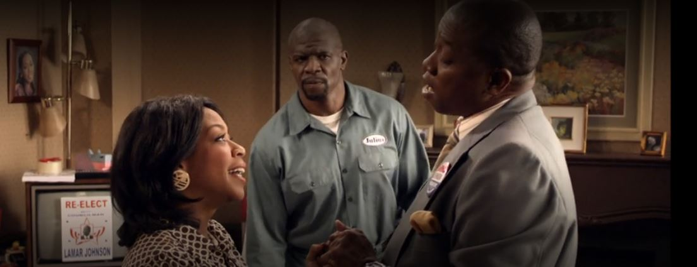

História e candidatura de Lamar Johnson
Não temos muitas informações da vida de Lamar Johnson, apenas que a família da Rochelle o apoiou nas eleições anteriores e que ela não iria deixar de ajudá-lo nesta campanha.
Vemos que o Julius tem bastante ciúme dele com sua esposa Rochelle por conta da proximidade e intimidade que há entre os dois.
Apesar de ter uma queda nas intenções de votos por conta da história do Assassino da Tesoura, Lamar Johnson ganhou as eleições e se tornou-se vereador